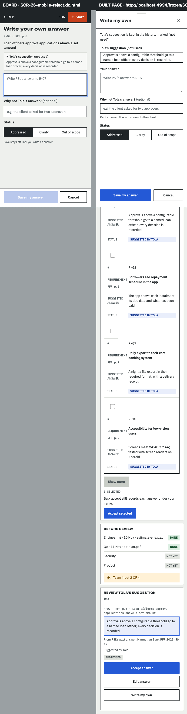
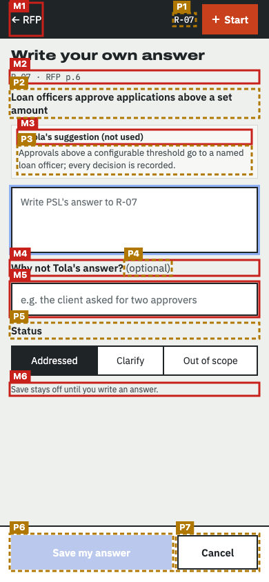
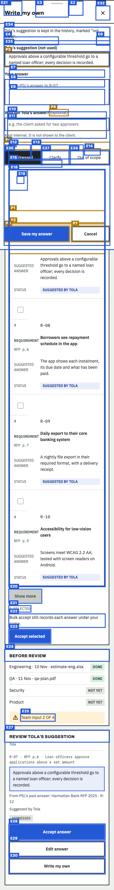
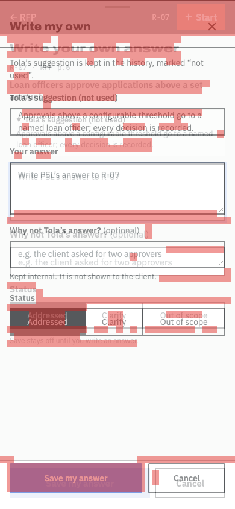

Does the built page follow the design?
Board SCR-26-mobile-reject.dc.html compared with http://localhost:4994/frozen/SCR-26-mobile-reject-390.html at 390px wide · 2026-11-19T01:38:31.104Z
- Every board item is on the page or approved as an exception (100%).
- Visual match 72 is below 90.
- 7 item(s) are in a different place; review them (not part of the pass rule unless --strict-position).
9 of 15 things drawn on the board were found on the page: headings, buttons, links, search and filter controls, table columns, labels and the repeated rows (counted once, not per row).
How closely the shapes line up: blocks, bars, tables and text areas, compared in 12px squares over the top 844px. Different words in the same place still count as a match, so sample data does not lower the score.
Missing from the built page 6
Drawn on the board but not found on the page. Each one must be built, or approved as an exception.
| # | What | Text on the board | Where on the board | Exception |
|---|---|---|---|---|
| M1 | Link | ← RFP | left, 6px down | approved Conflicts 14: the phone top bar is the frame's "← Queue" with the item reference. · builder proposal, pending design engineer |
| M2 | Text | R-07 · RFP p.6 | middle, 104px down | approved Conflicts 12: the suggestion's reference line is returned item text in the panel and the row; the board's separate eyebrow is not drawn. · builder proposal, pending design engineer |
| M3 | Button | Tola's suggestion (not used) | middle, 190px down | approved Conflicts 12: the display field, the reason label, its optional marker and placeholder are drawn by the shared step form (labels and the "(optional)" marker as returned). · builder proposal, pending design engineer |
| M4 | Text | Why not Tola's answer? (optional) | middle, 379px down | approved Conflicts 12: the display field, the reason label, its optional marker and placeholder are drawn by the shared step form (labels and the "(optional)" marker as returned). · builder proposal, pending design engineer |
| M5 | Text | e.g. the client asked for two approvers | middle, 410px down | approved Conflicts 12: the display field, the reason label, its optional marker and placeholder are drawn by the shared step form (labels and the "(optional)" marker as returned). · builder proposal, pending design engineer |
| M6 | Text | Save stays off until you write an answer. | middle, 557px down | approved Conflicts 17: the shared form never greys Save out; an empty answer names the field instead. · builder proposal, pending design engineer |
In a different place 7
Found on both, but in a different order, side of the page, or area (for example inside the table frame instead of above it).
| # | What | How it moved |
|---|---|---|
| P1 | Text R-07 |
|
| P2 | Text Loan officers approve applications above a set amount |
|
| P3 | Text Approvals above a configurable threshold go to a named loan officer; every decision is recorded. |
|
| P4 | Text (optional) |
|
| P5 | Text Status |
|
| P6 | Text Save my answer |
|
| P7 | Link Cancel |
|
Looks different 6
Found on both, but styled differently: table rows and cells, fonts, colours, underlines, outlines, corners. Not part of the score; check each one against the board.
| What | Difference |
|---|---|
| Text "R-07" |
|
| Link "Start" |
|
| Heading "Write your own answer" |
|
| Text "Approvals above a configurable threshold go to a named loan officer; every decision is recorded." |
|
| Text "Save my answer" |
|
| Link "Cancel" |
|
On the page but not on the board 38
Built but not drawn. Some are expected (data, status lines); the rest need the design engineer to approve or remove them.
| # | What | Text on the page | Where on the page |
|---|---|---|---|
| E1 | Link | Back to Queue | left, 6px down |
| E2 | Button | Alerts, 1 unread | right, 6px down |
| E3 | Text | TL-RFP-2026-014 | middle, 0px down |
| E4 | Text | DEADLINE 28 NOV · 16 DAYS | left, 127px down |
| E5 | Navigation area | Work item | right, 127px down |
| E6 | Link | History | right, 127px down |
| E7 | Text | Only a PM can decide. | middle, 239px down |
| E8 | Text | You are PM. | middle, 272px down |
| E9 | Link | Record team input | middle, 305px down |
| E10 | Text | Tola | middle, 381px down |
| E11 | Text | I matched 41 requirements to answers PSL gave in past bids. I’ve marked them “suggested”; check each one before it counts. | middle, 404px down |
| E12 | Filter | Filter | left, 493px down |
| E13 | Button | Status: Suggested by Tola | middle, 493px down |
| E14 | Text | 4 OF 41 | right, 506px down |
| E15 | Text | More rows aren’t available yet. | left, 545px down |
| E16 | Section | Table | middle, 576px down |
| E17 | Table | middle, 578px down | |
| E18 | Table column | SELECT | left, 578px down |
| E19 | Checkbox | Select all shown rows | left, 600px down |
| E20 | Pagination | Show more | left, 1999px down |
| E21 | Text | 1 SELECTED | left, 2055px down |
| E22 | Text | Bulk accept still records each answer under your name. | middle, 2083px down |
| E23 | Button | Accept selected | left, 2135px down |
| E24 | Heading | BEFORE REVIEW | middle, 2203px down |
| E25 | Text | Team input 2 OF 4 | left, 2422px down |
| E26 | Side panel | Review and decide | left, 0px down |
| E27 | Heading | REVIEW TOLA’S SUGGESTION | middle, 2477px down |
| E28 | Button | Accept answer | middle, 2795px down |
| E29 | Button | Edit answer | middle, 2853px down |
| E30 | Button | Write my own | middle, 2911px down |
| E31 | dialog | Write my own | middle, 0px down |
| E32 | Button | Close | right, 22px down |
| E33 | Form | Write my own | middle, 94px down |
| E34 | Text | Tola’s suggestion is kept in the history, marked “not used”. | middle, 94px down |
| E35 | Text | Tola’s suggestion (not used) | middle, 152px down |
| E36 | Option | Addressed | left, 513px down |
| E37 | Option | Clarify | middle, 513px down |
| E38 | Option | Out of scope | right, 513px down |
Pictures
The red dashed line on the side-by-side marks how far down the visual score looks. On the marked board, red boxes are missing items (M). On the marked page, amber boxes moved (P) and blue boxes are extra (E). In the difference picture both screens are laid over each other and red squares are where the shapes do not line up.






Notes about this run
- Images: /_blob/ images are served from /Users/Hunchoo/psl-factory/design/mascots/canvas-assets.json (19 mapped).
Found on both (9)
| Text | R-07 | |
| Link | Start | page: Start work |
| Heading | Write your own answer | page: Tamarind Loans · loan origination RFP |
| Text | Loan officers approve applications above a set amount | page: Loan officers approve applications above a set amount RFP p.6 |
| Text | Approvals above a configurable threshold go to a named loan officer; every decision is recorded. | |
| Text | (optional) | |
| Text | Status | |
| Text | Save my answer | |
| Link | Cancel |
How the scores are worked out
Element coverage. The board is drawn locally from its own template and sample data. From the drawn board the check lists everything a person sees or uses: page areas (navigation, main, search), headings, links, buttons, form fields with their labels, table column headers, filter, search and pagination controls and fixed labels. Rows drawn from sample data count once, as a pattern ("table rows with these columns"). Each item is looked for on the page by its kind and its words (ignoring capitals, curly quotes and small wording differences, at least 80% similar). Coverage is found ÷ drawn. Order is compared in reading order (top to bottom, left to right); an item is "moved" when it breaks the order, sits on the other side of the page, or sits inside a different area.
Visual match. Both full-page screenshots are compared in 12px squares after a light blur, over the board's height (844px; the page is 3017px). Only squares with something in them count. A square matches when its colours line up, or when both have text or lines there. Score = matching ÷ counted squares (1677 of 2330). Over every square including empty background it would be 72.1.
Technical details
Board file: /Users/Hunchoo/psl-factory/design/canvas/project/SCR-26-mobile-reject.dc.html
Viewport: 390×844
Report data: report.json
Exceptions file: /Users/Hunchoo/psl-factory/delivery/features/F-37/fidelity-exceptions.json